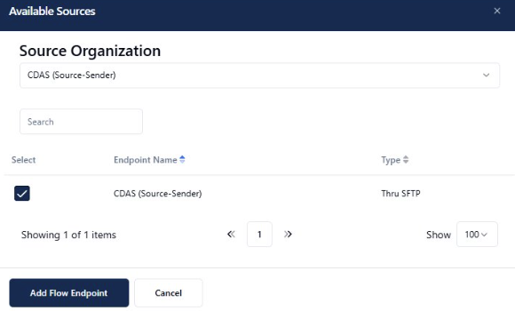

Internal to External: Banking File Transfer
CDAS → FedEx Net → Scotia Bank. Weekly encrypted banking file pushed via SFTP every Wednesday at 8–9 PM.
Business Context
This is FedEx Freight's highest-volume, highest-risk weekly file transfer. The CDAS finance system generates a complete pay data file every Wednesday. That file travels through FedEx Net to Scotia Bank, which processes payroll reconciliation. Failure or delay has direct payroll consequences.
The flow is bidirectional — after processing, Scotia Bank pushes a reconciliation file back to FedEx Net via SFTP. The back-end recon file is Scotia's responsibility to push.
Current FedEx Net Setup
How this flow is configured in FedEx Net today — every concept here maps directly to a Boomi MFT equivalent.
Current Architecture
Finance System
(auto-pushes)
MFT Server
homegrown system
SFTP Server
(target URL)
Scotia Bank pushes reconciliation file back after processing
FedEx Net Configuration for This Flow
| FedEx Net Field | Value for This Flow | What It Means |
|---|---|---|
| Sender | CDAS system | The internal system pushing the file into FedEx Net |
| Receiver | Scotia Bank | The external SFTP destination |
| Application Type | Banking / pay data | File classification; also used for bypass rules and routing logic |
| Destination Type | SFTP server (target URL) | External SFTP endpoint at Scotia Bank's URL |
| Auth Method | Public key (RSA/DSA/SHA/Ed25519) | Scotia Bank's public key is stored in FedEx Net; no password exchange |
| Encryption | At-rest encryption on file | The banking file itself is encrypted before it leaves CDAS |
| Sequence | Active (sequence number set) | Flow is "on" — if sequence is blank, the flow is disabled |
| Schedule | Wednesday ~8–9 PM | File arrives weekly; timing driven by CDAS processing cycle |
Pain Points (from Nicole)
- Entire setup is manual — 17+ clicks to configure a new destination
- No automatic retry — if delivery fails, team must manually restart the file
- System bounces 4–8 times per day, which can interrupt active transfers
- Error diagnosis requires manually clicking into each queued file to view logs
- No proactive alerting — team finds out about failures reactively
Boomi MFT Configuration
How to configure this flow in Boomi MFT — mapping every FedEx Net concept to its Boomi equivalent.
Architecture in Boomi MFT
Internal Finance System
into Boomi MFT
Platform
manages creds
SFTP Server
FedEx Net → Boomi MFT Concept Mapping
| FedEx Net Concept | Boomi MFT Equivalent | Key Difference |
|---|---|---|
| Sender | Source Organization / Connector | Boomi uses named Organizations with endpoint types (iPaaS, SFTP, S3, etc.) |
| Receiver | Target Organization / SFTP Connection | Credentials stored centrally, reusable across flows |
| Destination | Flow Target Endpoint | Configured once in Flow Studio; no per-file manual setup |
| Sequence Number | Flow Active/Inactive toggle | Boomi flows can be enabled/disabled with a single toggle |
| Application Type | Flow name or Description | Boomi uses regex filters for routing; no XML parsing required |
| Public Key (stored per receiver) | SSH Key stored in Boomi Secrets | Centrally managed, audited, rotated without touching flow config |
| Mailbox | Virtual Folder | Isolated per partner with access controls; see Use Case 3 |
| View Log | Activity Log (Received → Validated → Processed → Delivered) | 4-state audit trail, real-time, searchable — not manual click-through |
Configuration Steps for Wednesday Demo
-
1
Navigate to Organizations and click Add Organization. Name it
CDASand click Save. -
2
Within the CDAS organization, click Endpoints → Add Endpoint. Enter an Endpoint Name, then in the Type dropdown select Thru SFTP. Save the endpoint.
-
3
Create a second Organization named
Scotia Bankand click Save. -
4
Within the Scotia Bank organization, add an endpoint of the type External SFTP and name it Scotia Bank External SFTP. Populate the fields with the credentials below and click Test Connection to confirm Boomi MFT can reach it.
Host us-ftpsbx-02.thruinc.net Port 22 Username demo102.thruinc.net\workshop Password Will be shared during workshop -
5
In Flow Studio, create a flow: CDAS → Scotia Bank. Subscribe the two organizations.
In the blue Source panel click Add Flow Endpoint. From the Source Organization dropdown choose CDAS and select the endpoint, then click Add Flow Endpoint to confirm.

Available Sources — select the CDAS endpoint (Type: Thru SFTP) and click Add Flow Endpoint In the green Target panel click Add Flow Endpoint. From the Target Organization dropdown choose Scotia Bank and select the endpoint, then click Add Flow Endpoint to confirm.
Once added to the flow, click on the Scotia Bank flow endpoint. In the Flow Endpoint Editor, firstly in the Configuration tab scroll down to set the Endpoint Target Paths. The path will be
/SHARED/Workshop/Scotia-Bank. Then go to the Schedule tab, change the schedule to 1 minute instead of the default of one hour, and click Save Changes.Once back in Flow Studio, click the pulsing blue View and Push Changes button and accept the pending changes by clicking Push Changes.
-
6
As we do not have direct access to CDAS, we will simulate the file push using FileZilla or WinSCP. Connect to the Boomi MFT SFTP endpoint using the credentials extracted from the associated flow endpoint in the Flow Endpoint Editor.
Host staging-sftps.thruinc.com Port 22 Username Extract from the CDAS flow endpoint Password Extract from the CDAS flow endpoint Once connected, upload a test file. Watch it move through the Activity Log in real time: Received → Scanned → Processed → Delivered.
-
7
Failure demo (time permitting): Intentionally break the SFTP credentials on Scotia Bank. Show the failure in the Activity Log at the Delivered stage.
Demo & Proof Points
The moments that will land hardest with Chastity and Nicole on Wednesday.